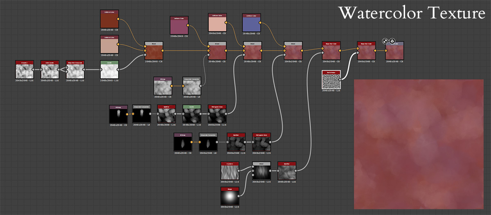
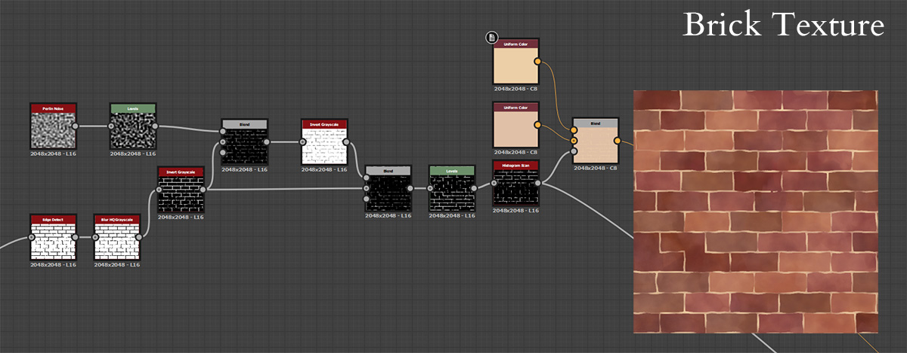

This scene was inspired by a photo I took while traveling in Jiufen, Taiwan. I loved how lush and green the scenery was! While creating the concept for this scene and sketching out a plan, I actually ended up finding the location on google maps to gather more reference.
My goal for this project was to create a stylized watercolor-inspired scene. I wanted to create a shader for watercolor-style shadows, get more comfortable using Substance Designer to create smart materials for Substance Painter, and to practice creating 3D foliage.
Watercolor Texture
The first material I made in Substance Designer was a watercolor texture I could turn into a smart material to use for texturing in Substance Painter. First, I created 3 different brushstrokes using Photoshop, then they were layered together and parameters were exposed to independently adjust the color, scale, and opacity. I also recreated a version of this as a shader to use in-engine. The shader version was used for larger areas such as the ground and walls.

Brick Texture
I used the watercolor material again as a base for the brick texture, which gave a lot of nice subtle color variation. I wanted to make sure that the grout of the brick had variation in the lines, like it was imperfectly painted with a paintbrush. I then used this texture as a tiling texture for the bricks and house walls.

Unique Textures
I textured the unique meshes such as the moped, plant pots, and gardening supplies using Substance Painter. I used the watercolor smart material I made in Substance Designer again then added AO, curvature, and a positional gradient. I used more noise and brushstroke-like textures for these masks to break them up and give them a more painterly, organic feel.
Trim Sheets
I used Substance Designer again to create the wood trim textures, using a similar technique as the brick textures. I also made a general trim sheet by baking high-res meshes onto a plane in Substance Painter. I used the watercolor smart material once again as a base. These trim sheets were used for assets like the power lines, pipes, pieces of the houses, and fences. I also made some simple posters and signs in Photoshop.
Foliage
I painted the plant textures in Photoshop using some watercolor brushes, then arranged the foliage planes in Blender to create the trees and bushes. I also tried to re-use the same leaf shapes for different types of plants by manipulating the mesh in different ways.
To get more color variation, I duplicated the plant material in Unity with a subtle darker tint.
Shader
A more in-depth explanation of the shader can be found here!